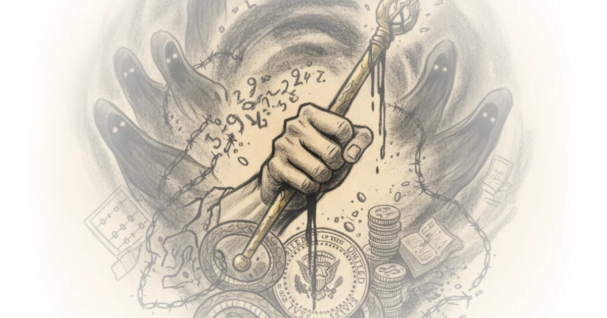

This piece from Reason doesn't just tally up pardons; it constructs a chilling arithmetic of impunity, arguing that the current administration has industrialized corruption to a scale that renders historical scandals like Watergate or Teapot Dome by comparison. The article's most arresting claim is not merely that pay-for-play exists, but that the price tag for justice has been inflated into the billions, effectively privatizing the executive clemency power in real-time.
The Price of Justice
The editors anchor their argument by contrasting the infamous Marc Rich pardon with recent actions, noting that while Clinton's move was a singular lapse, the current pattern is systemic. "When it comes to plausibly pay-for-play pardons, Trump in his second term makes Bill Clinton and every other president look like pikers," Reason reports. This comparison is jarring because it forces readers to recalibrate their moral compass; if the benchmark for scandal has shifted so drastically, what does that say about our institutional resilience? The piece details how Trevor Milton, convicted of investor fraud involving a fraudulent electric truck prototype, received an unconditional pardon without paying restitution. "They say the thing that he did wrong was he was one of the first people that supported a gentleman named Donald Trump for president," the article quotes the president as saying, stripping away any pretense of legal process.

Critics might argue that presidential pardons are constitutionally absolute and meant to be exercised without oversight, but the sheer volume of financial transactions linking donors to clemency makes the "unconditional" nature of these acts feel like a transactional fiction. The article highlights that Milton's family donated millions to political groups, yet he has since returned to "lavish Washington excess," hobnobbing with Cabinet members. This isn't just about one man avoiding prison; it's about the signal sent to every white-collar criminal: if you have the right connections and the right wallet, the law is negotiable.
Such is the rule, not the exception: When it comes to plausibly pay-for-play pardons, Trump in his second term makes Bill Clinton and every other president look like pikers.
From Teapot Dome to World Liberty Financial
The commentary deepens by weaving in historical context, specifically the Teapot Dome scandal of the 1920s. While Interior Secretary Albert Fall accepted bribes totaling roughly $7.6 million in today's money for oil leases, the article argues that modern equivalents dwarf this figure through sheer scale and secrecy. "Four days before Trump's second inauguration, a company called Aryam Investments 1 signed a deal with the president-elect's son Eric to buy a 49 percent stake in World Liberty Financial for a reported $500 million," Reason notes. The connection is stark: this secret enrichment of the First Family preceded a massive regulatory reversal that allowed a foreign sovereign wealth fund, previously blocked from acquiring advanced AI chips, to secure half a million high-powered units annually.
The piece suggests that the corruption here is more brazen because it is open yet unacknowledged. "The Trump family net worth increased by more than $1 billion as a direct result of Sheikh Tahnoon bin Zayed Al Nahyan's frenetic and sometimes secret investments," the editors write, drawing a direct line between personal enrichment and national security policy. This reframes the scandal from a legal violation to an institutional collapse where foreign powers can effectively purchase US regulatory outcomes through private equity deals with the President's children.
The Normalization of Influence Peddling
The article then pivots to compare current events with the influence-peddling scandals of James Roosevelt and Hunter Biden, arguing that while those were seen as profound ethical breaches, they are now "dwarfed to the point of miniaturization." Reason points out that Jared Kushner's private equity firm has amassed over $6 billion from Middle Eastern leaders he negotiated with on behalf of the state. The editors observe a disturbing shift in public discourse: "Eyebrows barely get raised anymore when the president, during official overseas trips, cuts ribbons on his latest golf course." This normalization is perhaps more dangerous than the acts themselves, as it suggests a societal fatigue where the boundaries between public service and private gain have been completely erased.
The piece also addresses the financial magnitude, citing a report that "Trump's revenue in 2025 jumped to at least $2.2 billion," a figure described by an expert as "completely unprecedented." The argument here is that the sheer volume of money makes traditional accountability mechanisms look obsolete. Even when pressed about conflicts of interest, the White House offers blanket denials: "Neither the president nor his family have ever engaged, or will ever engage, in conflicts of interest," Press Secretary Karoline Leavitt stated, a line the article treats as a symptom of the problem rather than a solution.
Bottom Line
Reason's most compelling contribution is its refusal to treat these events as isolated incidents, instead presenting them as a cohesive strategy that has fundamentally altered the cost-benefit analysis of corruption in America. The argument's greatest strength lies in its use of specific financial data to prove that the "pardon-shopping industry" is no longer theoretical but operational and lucrative. However, the piece's reliance on future hypotheticals regarding schoolchildren's knowledge risks feeling speculative; the immediate danger is not historical memory, but the active erosion of trust in the rule of law right now. Readers should watch for whether any congressional investigations can pierce this veil of secrecy or if the new normal will simply be a system where justice has a price tag.